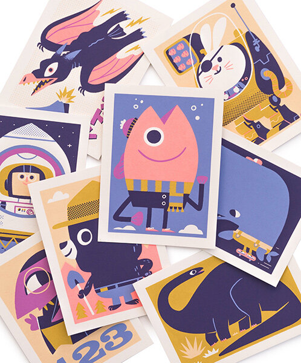

Prorfil
Latar belakang
Hobi
Nama Panggilan : Yuz
Tempat / Tanggal Lahir : Maros,07 Juli 1997
Pendidikan :
SDN 158 INP. ALLU (2002-2008)
MTs AINUS SYAMSI (2008-2011)
MA DDI ALLIRITENGAE MAROS (2011-2014) JURUSAN IPA
UNIVERSITAS TEKNOLOGI SULAWESI FAKULTAS TEKNIK (2015-2020)
